Directory
Physics
Samar AzizighannadAdjunct Instructor in UCANMaterial Sciences and EngineeringBrandan BalasinghamAdjunct Instructor in UCAN Trevor TysonDistinguished ProfessorphysicsHaimin WangDistinguished ProfessorphysicsSpace ScienceYan XuResearch Professor
Trevor TysonDistinguished ProfessorphysicsHaimin WangDistinguished ProfessorphysicsSpace ScienceYan XuResearch Professor
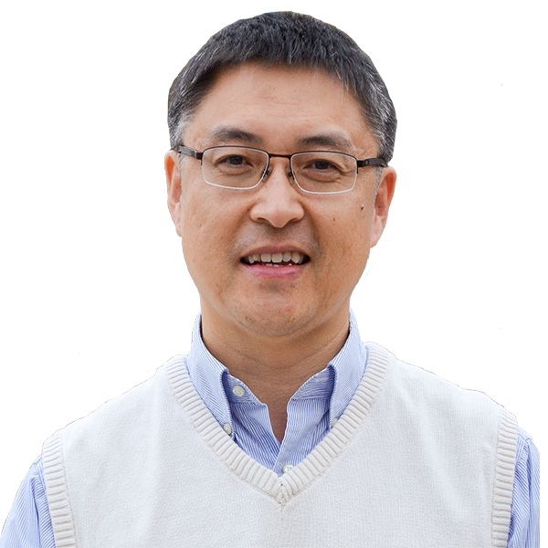
Wenda CaoProfessorBin ChenProfessorSolar FlaresCoronal Mass EjectionsRadio AstronomyMagnetic ReconnectionYusui ChenAdjunct Instructor in UCANQuantum Informationquantum computing and quantum measurementKen ChinProfessorSEMICONDUCTOR PHYSICSDEVICE PHYSICSOPOLAR ENERGYOPTICAL FIBERCristiano DiasProfessorphysicsbiologyProteinsHydrophobic interactions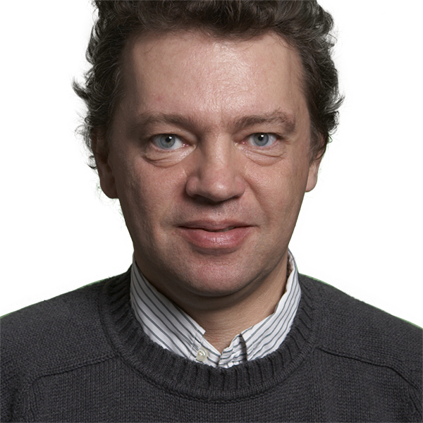
Gregory FleishmanDist. Research ProfessorSolar physicsSpace ScienceastrophysicsTheoretical Physics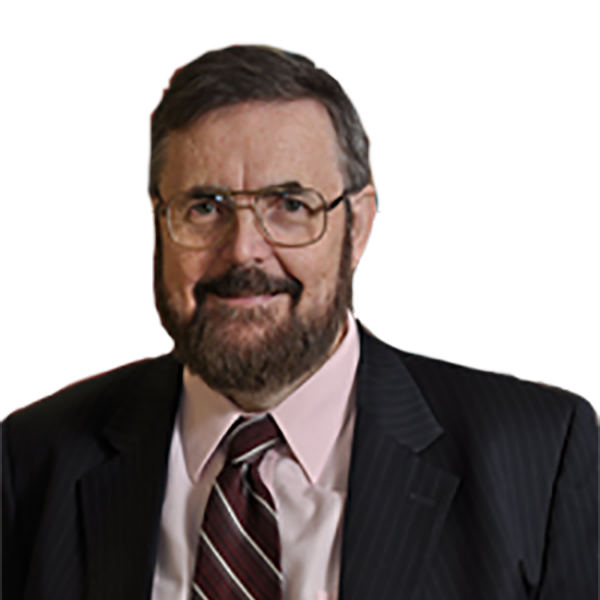
Ian GatleyDistinguished Professor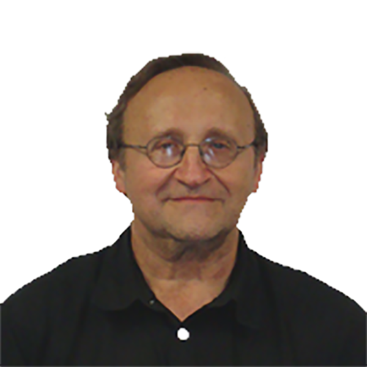
George GeorgiouUniversity LecturerSi devicesSolar Cells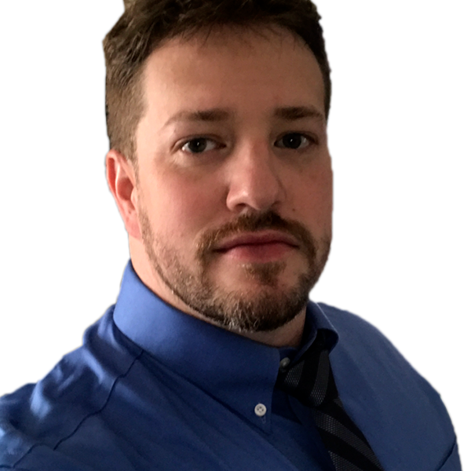
Andrew GerrardProfessor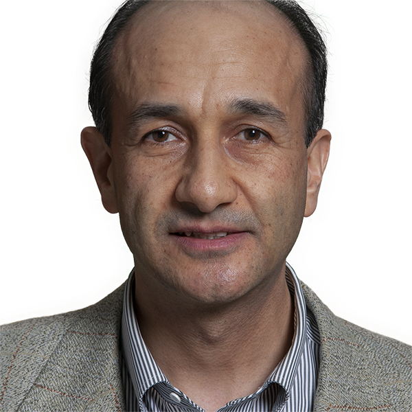
Oktay GokceSenior University Lecturer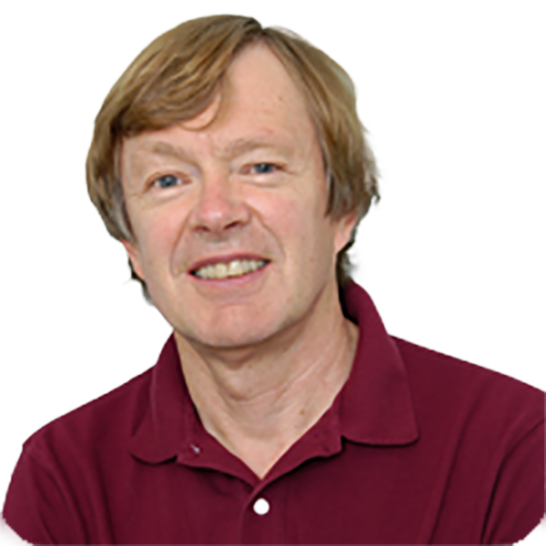
Philip GoodeDistinguished Research ProfessorSolar physicsbuilding New Solar Telescope and its instrumentationclimate changeLindsay GoodwinAssistant ProfessorIonospheric properties impact long distance radio communicationnavigation systemspower infrastructureSpace PhysicsKeiji HayashiAdjunct Instructor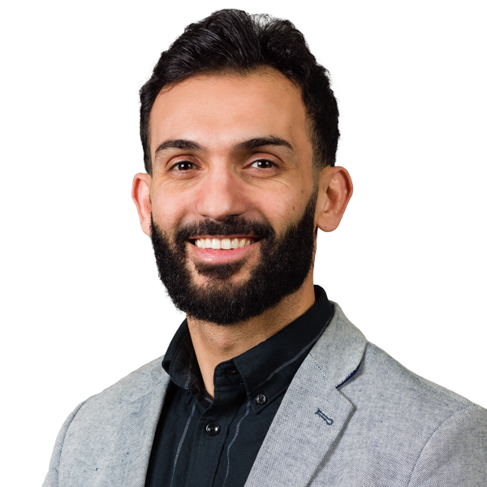
Hussein HijaziUniversity Lecturer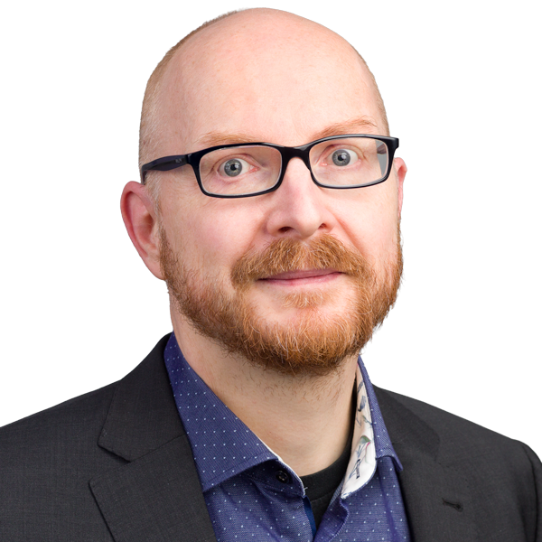
Tino HofmannAssociate ProfessorTHz-IR-VUV EllipsometryOptical Hall EffectIII-V semiconductorsmetamaterialsNancy HusseinAdjunctSatoshi InoueAssistant ProfessorSolar physicsSpace Physicsplasma physicsAndres JerezSenior University LecturerJu JingResearch Professor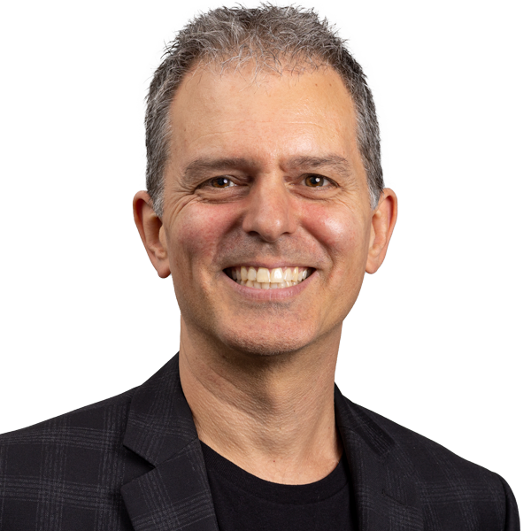
Steve KaneUniversity LecturerUltrafast opticsdiffractionmanipulation of femtosecond laser pulsesphysics education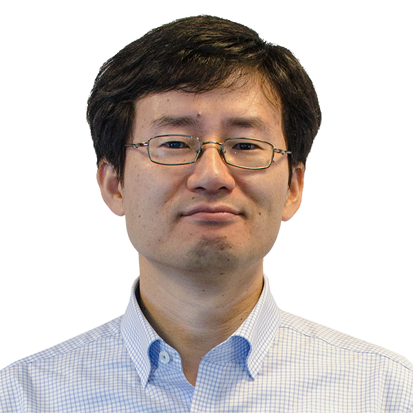
Keun Hyuk AhnAssociate ProfessorHyomin KimAssistant ProfessorMagnetospheric physicsSpace-borne and ground-based instrumentationSpace Physics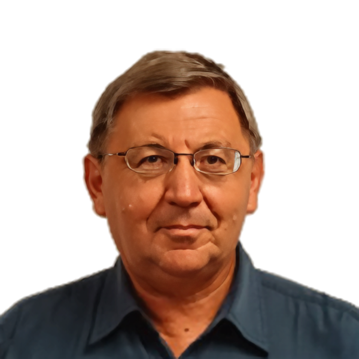
Alexander KosovichevDistinguished ProfessorSolar observations and theoryhelioseismologyastrophysicsnumerical simulationsIlya KuzichevAssistant Research Professorplasma physicsSolar WindRadiation BeltsResonant Wave-Particle InteractionsLouis LanzerottiDistinguished Research ProfessorHis principal research interests have included space plasmasgeophysicsJeongwoo LeeResearch ProfessorSolar physicsSpace Physics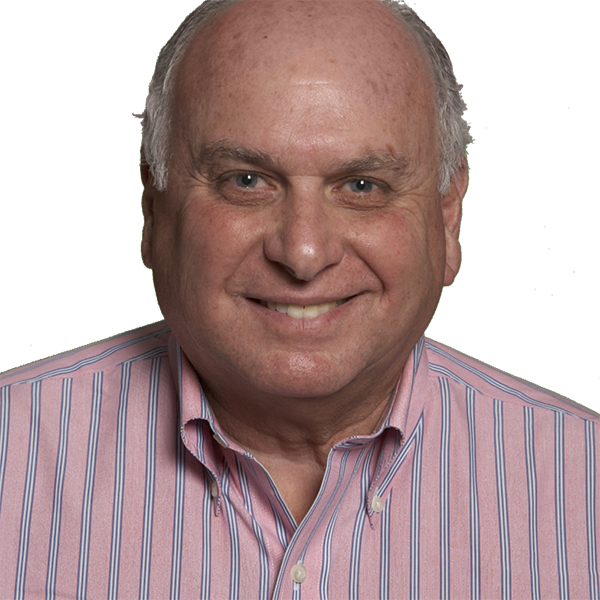
Roland LevyDistinguished ProfessorQin LiAssistant Research ProfessorWilliam LongleyResearch ProfessorLibarid MaljianUniversity LecturerJohn Meriwetherhourly Dist Research ProfSpace Physicsoptical measurements of thermospheric dynamics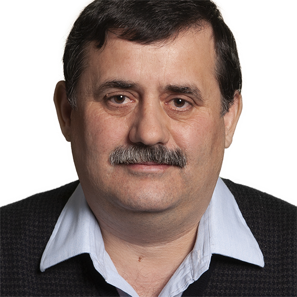
Gelu NitaResearch Professorphysics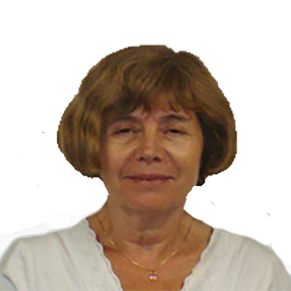
Halina OpyrchalAdjunct Instructor in UCANJan OpyrchalAdjunct Instructor in UCAN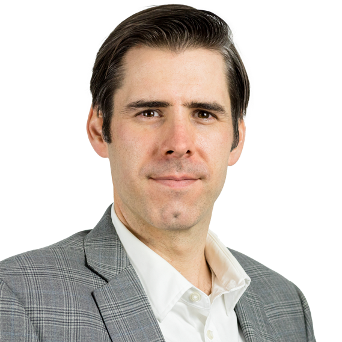
Gareth PerryAssistant ProfessorSolar-terrestrial physicspolar-cap ionosphereRemote SensingN. RavindraProfessorEnergy - Solar CellsTurbines/Windmills/Phase Change MaterialsHydrogenSemiconductor MaterialsVitaly ShneidmanSenior University Lecturernucleationphase transitionscondensatiionripening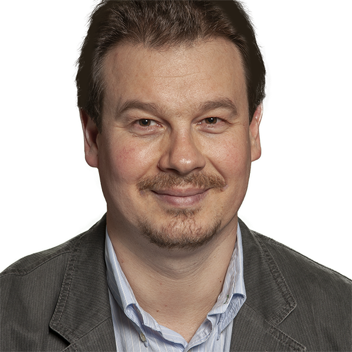
Andrei SirenkoProfessorOpticsEllipsometryRaman scatteringXRDJohn StefanAssistant Research Professor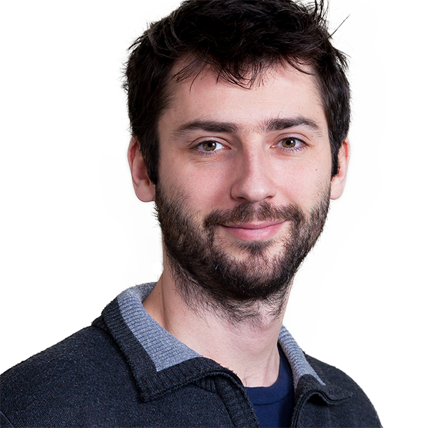
Benjamin ThomasAssociate Professorapplied opticslaser spectroscopy and remote sensingEntomological lidarEntomologyTrevor TysonDistinguished ProfessorphysicsHaimin WangDistinguished ProfessorphysicsSpace ScienceYan XuResearch Professor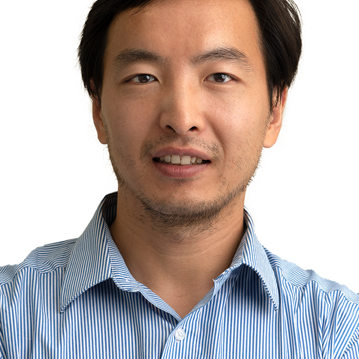
Junjie YangAssistant ProfessorNeutron scattering of quantum materialssingle crystal growthmagnetization and electric transport measurementsCondensed Matter PhysicsSijie YuAssistant ProfessorSolar physicsHeliophysicsVasyl YurchyshynResearch ProfessorSolar physicsChangshi ZhouUniversity Lecturer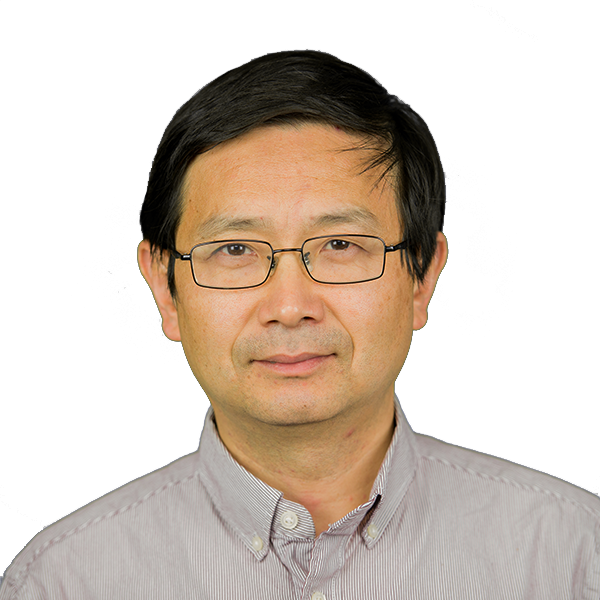
Tao ZhouAssociate ProfessorProfessors
Ian GatleyDistinguished ProfessorPhilip GoodeDistinguished Research ProfessorSolar physicsbuilding New Solar Telescope and its instrumentationclimate changeAlexander KosovichevDistinguished ProfessorSolar observations and theoryhelioseismologyastrophysicsnumerical simulationsLouis LanzerottiDistinguished Research ProfessorHis principal research interests have included space plasmasgeophysicsRoland LevyDistinguished ProfessorTrevor TysonDistinguished ProfessorphysicsHaimin WangDistinguished ProfessorphysicsSpace ScienceWenda CaoProfessorBin ChenProfessorSolar FlaresCoronal Mass EjectionsRadio AstronomyMagnetic ReconnectionKen ChinProfessorSEMICONDUCTOR PHYSICSDEVICE PHYSICSOPOLAR ENERGYOPTICAL FIBERCristiano DiasProfessorphysicsbiologyProteinsHydrophobic interactionsGregory FleishmanDist. Research ProfessorSolar physicsSpace ScienceastrophysicsTheoretical PhysicsJu JingResearch ProfessorJeongwoo LeeResearch ProfessorSolar physicsSpace PhysicsWilliam LongleyResearch ProfessorJohn Meriwetherhourly Dist Research ProfSpace Physicsoptical measurements of thermospheric dynamicsGelu NitaResearch ProfessorphysicsN. RavindraProfessorEnergy - Solar CellsTurbines/Windmills/Phase Change MaterialsHydrogenSemiconductor MaterialsAndrei SirenkoProfessorOpticsEllipsometryRaman scatteringXRDYan XuResearch ProfessorVasyl YurchyshynResearch ProfessorSolar physicsAssociate Professors
Tino HofmannAssociate ProfessorTHz-IR-VUV EllipsometryOptical Hall EffectIII-V semiconductorsmetamaterialsKeun Hyuk AhnAssociate ProfessorBenjamin ThomasAssociate Professorapplied opticslaser spectroscopy and remote sensingEntomological lidarEntomologyTao ZhouAssociate ProfessorAssistant Professors
Lindsay GoodwinAssistant ProfessorIonospheric properties impact long distance radio communicationnavigation systemspower infrastructureSpace PhysicsSatoshi InoueAssistant ProfessorSolar physicsSpace Physicsplasma physicsHyomin KimAssistant ProfessorMagnetospheric physicsSpace-borne and ground-based instrumentationSpace PhysicsIlya KuzichevAssistant Research Professorplasma physicsSolar WindRadiation BeltsResonant Wave-Particle InteractionsQin LiAssistant Research ProfessorGareth PerryAssistant ProfessorSolar-terrestrial physicspolar-cap ionosphereRemote SensingJohn StefanAssistant Research ProfessorJunjie YangAssistant ProfessorNeutron scattering of quantum materialssingle crystal growthmagnetization and electric transport measurementsCondensed Matter PhysicsSijie YuAssistant ProfessorSolar physicsHeliophysicsSenior Lecturers
Samar AzizighannadAdjunct Instructor in UCANMaterial Sciences and EngineeringBrandan BalasinghamAdjunct Instructor in UCANYusui ChenAdjunct Instructor in UCANQuantum Informationquantum computing and quantum measurementOktay GokceSenior University LecturerKeiji HayashiAdjunct InstructorNancy HusseinAdjunctAndres JerezSenior University LecturerHalina OpyrchalAdjunct Instructor in UCANJan OpyrchalAdjunct Instructor in UCANVitaly ShneidmanSenior University Lecturernucleationphase transitionscondensatiionripeningNo faculty match “”.